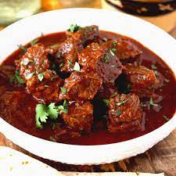

Chilli Colorado

Chilli Colorado
Chilli Colorado is a flavorful dish made from beef brisket, dried chillies, and spices. It
will warm you on those cool fall days or cold winter days.
I like to eat my chilli colorado over rice, but they make great tacos as well.
Ingredients
- Beef brisket
- Guajillo Chilli Peppers
- Morita Chilli Peppers
- Ancho Chilli Peppers
- Beef Stock
- Onion
- Spices
Steps
- Prepare the dried chilli pepper sauce
- Remove seeds from the dried chilli peppers
- Add peppers to pan and just cover with water
- Bring water to boil then cover and turn off heat
- Let peppers sit for fifteen minutes
- Transfer the chilli peppers, a cup of water used to hydrate, and onion to a blender
- Blend until smooth
- Prepare the beef
- Cut the brisket into half inch pieces
- Add spices and a teaspoon of flour to the brisket and mix
- Bring two tablespoons of oil to a shimmer in a large pot
- Brown the brisket in small batches to brown in the pot
- Transfer the browned piece to a bowl and continue to brown other piece until done
- Once all the brisket is browned deglaze the pot with a bit of beef stock
- Add brisket back to the pot along with the chilli pepper sauce
- Add the beef stock and spices
- Bring to a simmer and cook for two hour or until the beef is tender
- Adjust the consistency of the chilli colorado to your liking
- Serve over rice or make tacos. Enjoy!